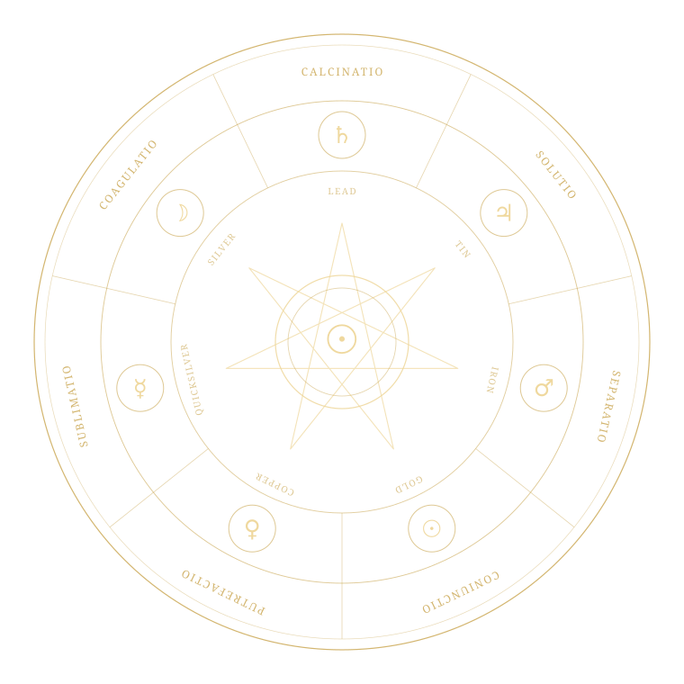

Lexicon of Symbols
A symbol is a compression. One mark carries a metal, a planet, a day of the week, an organ, a temperament and a mood, and the tradition's skill lies in knowing which of those is being invoked.
The great tables of correspondence (Agrippa in 1533, the Golden Dawn's papers in the 1890s, Crowley's Liber 777 in 1909) exist so that a practitioner can build a symbol rather than improvise one. If the operation is under Venus, then the day is Friday, the number seven, the metal copper, the sphere Netzach, and the incense, colour and form follow. The internal consistency is the point: the mind is being given a single unambiguous direction to move in.
Read psychologically, a table of correspondences is a technology for concentrating attention, and its power comes from coherence rather than from any property of copper. Both readings are given below.
Select a mark to read it
Ten spheres, twenty two paths
The diagram the Golden Dawn made the spine of Western magic: ten sephiroth arranged in three pillars, joined by twenty two paths, one for each letter of the Hebrew alphabet and one for each trump of the tarot. Select a sphere or a path to read it. The path letters are drawn at the midpoint of each line.
The three pillars
Severity on the left (Binah, Geburah, Hod), mercy on the right (Chokmah, Chesed, Netzach), and the middle pillar of equilibrium. The left is form and limit, the right is force and expansion, and neither is good or evil on its own.
The four worlds
Atziluth (emanation), Briah (creation), Yetzirah (formation) and Assiah (action): the whole Tree repeated at four degrees of density, so that any sphere can be read on four levels.
Daath and the Abyss
The non sphere on the middle pillar, knowledge without being, and the gulf that separates the three supernals from everything below. The crossing of it is the crisis in both Crowley's grades and Jung's account of ego surrender.
How a correspondence is used
Take an operation concerning speech: a difficult letter to write, an examination, a negotiation. The tradition sends you to Mercury. From Mercury follow the whole column: Wednesday, the number eight, the sphere Hod, the metal quicksilver, the eight by eight kamea, the angel Raphael, the colour orange, the intelligence Tiriel.
The practitioner then assembles those elements: the day, the hour, the colour of the ink, a sigil traced on the square, the name vibrated. Nothing in the procedure is arbitrary within its own system, and that closure is what makes it feel like a language rather than a wish.
The planetary squares, their intelligences and their spirits are set out in the hierarchies, and the sigil is traced in the workshop.